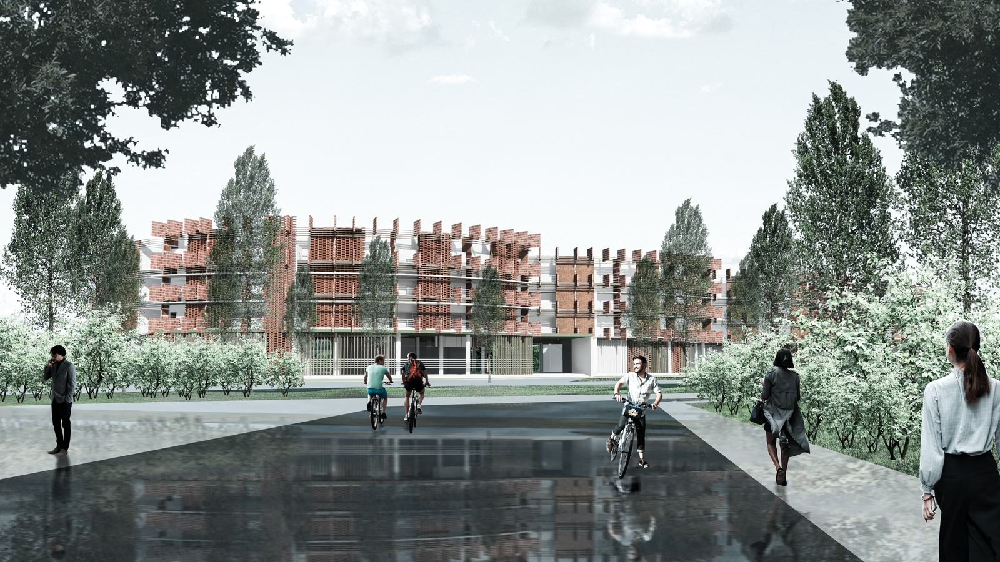

Sayembara Nasional Mahasiswa Rumah Susun, SAPPK ITB · entry A030 · 2022
An apartment for students, shaped by climate analysis. Circular plans and vertical fins limit direct sun from the east and west. The double-curved form catches the wind all year and leaves green spaces in the gaps between the masses. Semi-permeable materials let that wind into each room to cool it.

Plaza view, Enscape render (2022)
44%energy savings
43%water savings
51%material savings
4,500 m²floor area
How it was measured
Energy, water and material savings calculated in EDGE.
Climate visualised and analysed with Autodesk CFD, alongside sun studies on the boards.
Recognition
Honorable Mention, certificate dated 22 December 2022, signed by the Dean of SAPPK ITB.
EDGEAutodesk CFDRevitEnscape2022
Future plan: climate analysis
Climate Consultant: weather data to a psychrometric chart and a ranked list of passive strategies (shading, natural ventilation, thermal mass).
Ladybug on Rhino 8: sun path, solar radiation on façades, and daylight levels inside the rooms.
EDGE: projected energy, water and embodied-materials savings against the local baseline.
Future plan: design feedback
Building orientation that reduces east and west exposure.
Shading depth sized from the solar angles.
Window-to-wall ratio balanced between daylight and heat gain.
Glazing and envelope choices fed back into EDGE for the final check.